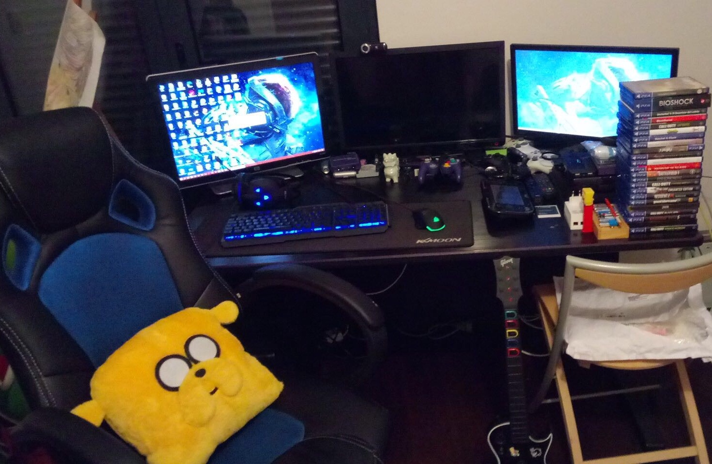

Je me présente Ugo Maliczak, 17 ans. Je suis au Lycée International de Ferney Voltaire en Premiere G1 et mes spécialité sont :
Je n'ai pas de grandes idées pour mon avenir, l'informatique et la psychologie sont deux domaines très differents l'un de l'autre mais les deux m'interessent, un par passion et l'autre par curiosité
Il m'arrive d'avoir pas mal de temps libre, je le passe en généralité à sortir, jouer du saxophone ou alors rester enfermer à jouer au Jeux Video qui est l'une de mes plus grandes passions depuis mon plus jeune âge. C'est un domaine dans lequel je possède de grande connaissance, une grande culture en général. Mon Jeux video préféré est Zelda Wind Waker sortie en 2003 sur Gamecube. J'assume être un geek car je suis un passionné de tous ces unvivers comme les Jeux Video, L'informatique, les PC et je n'arreterai jamais de me tenir aux courant des dernières actualités.
D'ailleurs voici une photo de mon Setup Gaming:
Vous pourrez trouver une description de mon setup: Setup.txt
Ce site est un projet pour la matière NSI qui vise à enseigner les fondamentaux de l'informatique comme:
Vous pourrez trouver en dessous quelques projet effectué en cours et un rapport sur ce que ce projet m'a permis d'apprendre en language de code HTML et CSS: